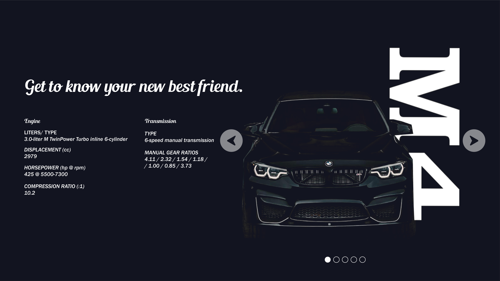
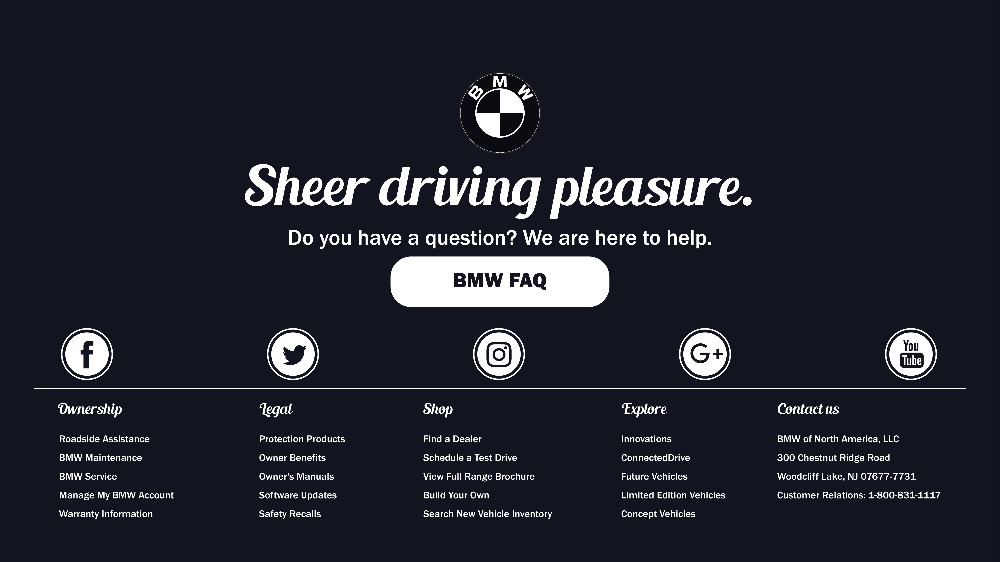
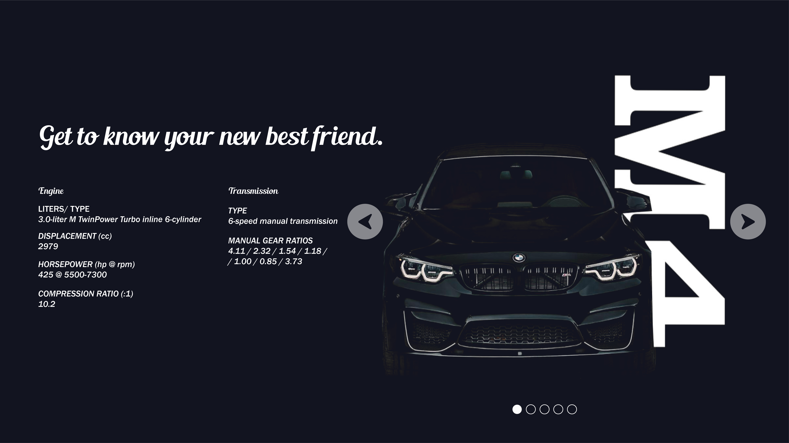
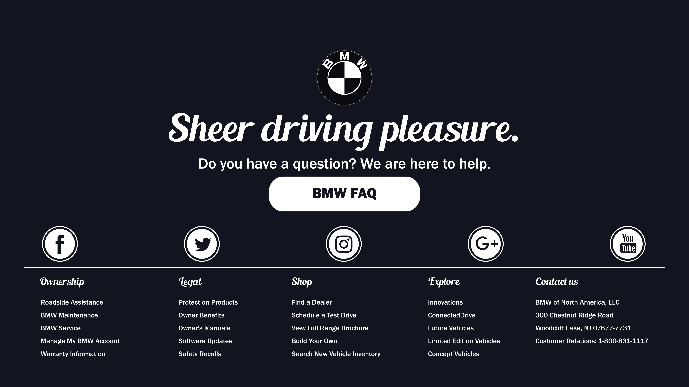

Reimagining the BMW website interface was a challenge for myself as a designer to preserve the brand's most valued features and create an aesthetically pleasing product. I aimed at satisfying both the first time user and the enthusiast. The first category I concluded would appreciate it being straightforward and easy to use while the latter would like to be shown the same boldness in the digital environment as they like in the cars.

 


